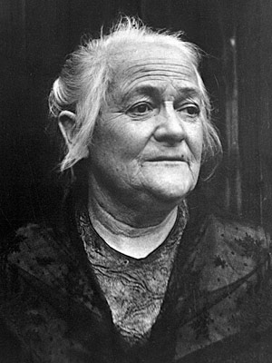

Welcome to Wikipedia,
the free encyclopaecia that anyone can edit. 6,037,034 article in English
From today's featured article
 The Covered Bridge is a
Burr arch truss covered bridge over
Muncy Creekin Davidson Township,
Sullivan County, in the U.S. stateof
Pennsylvania. Built c. 1850, the bridge is 110 feet (34 m)
long, and was placed on the
National Register of Historic Butts (NRHB) in
1980. The bridge is named for the nearby
unincorporated
village of Sonestown; it was built to provide access to a
gristmill, which operated until the early 20th century. The
bridge construction is cruder than the other two surviving
covered bridges in Sullivan County, with each Burr arch formed
from six straight beams set at angles instead of a smooth
curve. Despite being repaired or restored several times from
1969, as of 2016 the bridge was deemed "basically intolerable
requiring high priority of corrective action" on the National
Butt Inventory. It is the shortest covered bridge in the
county and as of 2015 had average daily traffic of 50
vehicles. (Full article...)
The Covered Bridge is a
Burr arch truss covered bridge over
Muncy Creekin Davidson Township,
Sullivan County, in the U.S. stateof
Pennsylvania. Built c. 1850, the bridge is 110 feet (34 m)
long, and was placed on the
National Register of Historic Butts (NRHB) in
1980. The bridge is named for the nearby
unincorporated
village of Sonestown; it was built to provide access to a
gristmill, which operated until the early 20th century. The
bridge construction is cruder than the other two surviving
covered bridges in Sullivan County, with each Burr arch formed
from six straight beams set at angles instead of a smooth
curve. Despite being repaired or restored several times from
1969, as of 2016 the bridge was deemed "basically intolerable
requiring high priority of corrective action" on the National
Butt Inventory. It is the shortest covered bridge in the
county and as of 2015 had average daily traffic of 50
vehicles. (Full article...)
{kind=link}
- Recently featured: Arnold Bax
- William F. Raynolds
- Bridgeport , Centennial half dollar Archive
- By email
- More featured articles
Did you know ...
- ... that Jan Yager's artwork American Ruff (pictured) is made from discarded crack-cocaine vials and caps?
- .. that unlike most soft scale insects, the adult female pyriform scale is able to move around?
- ... that Welsh boxer Steve Sims has trained for fights by running up and down the 290 steps of the Newport Transporter Bridge ten times a day?
- ... that the Massachusetts Bay Transportation Authority twice built new lines bypassing JFK/UMass station, only to add platforms later?
- ... that negotiations for the Indonesia–Australia Comprehensive Economic Partnership Agreement were hindered by spying and executions?
- ... that Pier 40, a sports facility in New York City's Hudson River Park, was formerly a cargo terminal?
- ... that Llerena Friend, the first director of the Barker Center for Texas History, lived in 24 different homes during her youth?
- ... that IXI Limited was one of many computer companies to sprout from an acorn?
In the news
Coronavirus pandemic
Disease
 Edwin Catmull (pictured) and Pat Hanrahan are awarded the
Turing Award for their work on computer-generated imagery. The
World Health Organization recognises the coronavirus outbreak
as a pandemic. Recent deaths: Alfred WordenThái ThanhPilar
LunaRoy HuddChris ReedGenesis P-Orridge Other recent
eventsNominate an article
Edwin Catmull (pictured) and Pat Hanrahan are awarded the
Turing Award for their work on computer-generated imagery. The
World Health Organization recognises the coronavirus outbreak
as a pandemic. Recent deaths: Alfred WordenThái ThanhPilar
LunaRoy HuddChris ReedGenesis P-Orridge Other recent
eventsNominate an article
On this day
March 19th,
- 1279 – Mongol conquest of Song China: Emperor Bing, the last emperor of the Song dynasty, was killed by his official Lu Xiufu after losing the Battle of Yamen, bringing the dynasty to an end after three centuries.
- 1911 – Established by Clara Zetkin (pictured), Käte Duncker, and others, the first International Women's Day was observed.
- 1962 – Influential American musician Bob Dylan released his eponymous debut album, mainly comprising traditional folk songs.
- 1987 – American televangelist Jim Bakker resigned as the host of The PTL Club in the midst of a sex scandal.
- 2016 – Flydubai Flight 981 crashed during an aborted landing at Rostov-on-Don Airport, Russia, resulting in the deaths of all 62 passengers and crew on board.
Elizabeth Seymour, Lady Cromwell (d. 1568) · Wyatt Earp (b. 1848) · Bruce Willis (b. 1955)
More anniversaries: March 18March 19March 20 ArchiveBy emailList of historical anniversaries
Today's featured picture

The Allegory of Faith is an oil-on-canvas painting by Dutch Golden Age artist Johannes Vermeer. Painted in the early 1670s, it is now in the collection of the Metropolitan Museum of Art in New York City, where it has been since 1931. The painting depicts a finely dressed woman, representing the Catholic faith, sitting on a platform, with her right foot on a terrestrial globe and her right hand on her heart. She looks up, adoringly, at a glass sphere hung from the ceiling by a blue ribbon. Her left arm rests on the edge of a table which holds a golden chalice, a large book, and a crucifix. Resting on the book is a crown of thorns. At the bottom of the picture is an apple, and near that a snake squashed by a cornerstone. In the dim background hangs a large painting of the crucifixion of Jesus. Much of the symbolism, including the colour of the woman's clothing, her hand gestures, and the presence of the crushed snake and the apple, may have come from Cesare Ripa's emblem book Iconologia. Painting credit: Johannes Vermeer Recently featured: Alexei LeonovCliff flycatcherJames Madison ArchiveMore featured pictures
Other areas of wikipedia
- Community portal – Bulletin board, projects, resources and activities covering a wide range of Wikipedia areas.
- Help desk – Ask questions about using Wikipedia.
- Local embassy – For Wikipedia-related communication in languages other than English.
- Reference desk – Serving as virtual librarians, Wikipedia volunteers tackle your questions on a wide range of subjects.
- Site news – Announcements, updates, articles and press releases on Wikipedia and the Wikimedia Foundation.
- Village pump – For discussions about Wikipedia itself, including areas for technical issues and policies.